🧠 CodeCraft Series · Track 02
Oracle Fundamentals
SQL부터 PL/SQL까지, 오라클의 핵심을 잡다
📍 현재 위치: Chapter 1 · 오라클 환경 설정 · 기본 SELECT
실무에 바로 적용 가능한 오라클 입문서
데이터를 다루는 힘, SQL로 시작해요
📚 Oracle 트랙 목차
PART 1 · SQL 기본
▶ Chapter 01: oracle_setting
▶ Chapter 02: select_basic
▶ Chapter 03: select_where
✅▶ Chapter 04: select_fn
▶ Chapter 05: select_group
▶ Chapter 06: select_join
▶ Chapter 07: select_subquery
📚 Oracle 트랙 목차
PART 2 · 데이터 조작 및 객체
▶ Chapter 08: update_delete
▶ Chapter 09: transaction
▶ Chapter 10: ddl
▶ Chapter 11: object
▶ Chapter 12: constraint
▶ Chapter 13: user
📚 Oracle 트랙 목차
PART 3 · PL/SQL 심화
▶ Chapter 14: plsql
▶ Chapter 15: record
▶ Chapter 16: cursor
▶ Chapter 17: save
이 트랙은 오라클의 기본 SQL부터 객체 관리, PL/SQL까지
실무 중심으로 배우며, 데이터베이스 전문가로 성장합니다.
🧩 Step 1: 핵심 개념
SQL 함수 실습
→ 문자열 처리, 숫자 계산, 날짜 연산, 형식 변환, 조건 분기
🔍 문자열 함수
- UPPER, LOWER, INITCAP : 대소문자 변환
- LENGTH, LENGTHB : 문자열 길이 및 바이트 수
- SUBSTR, INSTR : 부분 문자열 추출 및 위치 찾기
- REPLACE, LPAD, RPAD : 문자열 치환 및 채우기
- TRIM, LTRIM, RTRIM : 공백 또는 특정 문자 제거
- CONCAT : 문자열 연결
🧩 숫자 함수
- ROUND, TRUNC : 반올림 및 버림
- CEIL, FLOOR : 정수 올림/내림
- MOD : 나머지 계산
📅 날짜 함수
- SYSDATE, ADD_MONTHS, MONTHS_BETWEEN
- NEXT_DAY, LAST_DAY
- ROUND, TRUNC (날짜 형식)
- TO_CHAR, TO_DATE : 날짜 ↔ 문자열 변환
🔁 변환 함수
- TO_CHAR, TO_NUMBER, TO_DATE
- 숫자/날짜/문자 간 형식 변환
🧠 조건 함수
- NVL, NVL2 : NULL 처리
- DECODE, CASE : 조건 분기 처리
🧪 Step 2: 코드 예제
-- 대소문자 변환
SELECT ENAME, UPPER(ENAME), LOWER(ENAME), INITCAP(ENAME) FROM EMP;
-- 문자열 길이
SELECT ENAME, LENGTH(ENAME) FROM EMP;
-- 부분 문자열 추출
SELECT JOB, SUBSTR(JOB, 1, 2), SUBSTR(JOB, 3, 2), SUBSTR(JOB, 5) FROM EMP;
-- 문자 위치 찾기
SELECT INSTR('HELLO, ORACLE!', 'L') FROM DUAL;
-- 문자열 치환
SELECT REPLACE('010-1234-5678', '-', ' ') FROM DUAL;
-- 문자열 채우기
SELECT LPAD('Oracle', 10, '#'), RPAD('Oracle', 10, '*') FROM DUAL;
-- 공백 제거
SELECT TRIM(' _Oracle_ ') FROM DUAL;
-- 숫자 반올림/버림
SELECT ROUND(1234.5678, 2), TRUNC(1234.5678, 2) FROM DUAL;
-- 날짜 연산
SELECT SYSDATE, ADD_MONTHS(SYSDATE, 3), NEXT_DAY(SYSDATE, '월요일') FROM DUAL;
-- 날짜 형식 변환
SELECT TO_CHAR(SYSDATE, 'YYYY/MM/DD HH24:MI:SS') FROM DUAL;
-- 숫자 형식 변환
SELECT TO_CHAR(SAL, '$999,999') FROM EMP;
-- NULL 처리
SELECT NVL(COMM, 0), SAL + NVL(COMM, 0) FROM EMP;
-- 조건 분기
SELECT DECODE(JOB, 'MANAGER', SAL*1.1, SAL*1.03) FROM EMP;
SELECT CASE WHEN COMM IS NULL THEN '해당사항 없음' ELSE '수당 있음' END FROM EMP;
✅ 함수 요약표
| 함수 | 설명 |
|---|---|
| UPPER, LOWER, INITCAP | 대소문자 변환 |
| LENGTH, SUBSTR, INSTR | 문자열 길이 및 추출 |
| REPLACE, LPAD, RPAD | 문자열 치환 및 채우기 |
| ROUND, TRUNC | 숫자 반올림/버림 |
| SYSDATE, ADD_MONTHS | 날짜 연산 |
| TO_CHAR, TO_DATE | 형식 변환 |
| NVL, CASE | 조건 처리 |
🧪 Step 3: 연습문제
Q001
-EMP 테이블에서 ENAME을 대문자, 소문자, 첫글자만 대문자로 조회하시오.
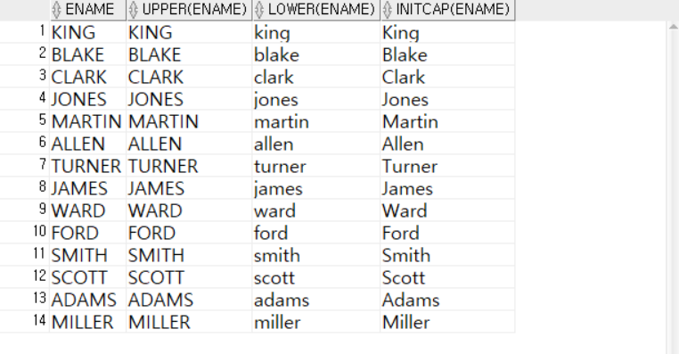
Q002
-EMP 테이블에서 UPPER를 이용하여 ENAME이 KING인 데이터를 조회하시오.

Q003
-EMP 테이블에서 UPPER를 이용하여 ENAME에 KING인 포함된 데이터를 조회하시오.
- 대소문자 상관없이 KING인 사람을 조회하는 것이 가능해짐.

Q004
-EMP 테이블에서 LENGTH를 이용하여 ENAME의 문자열 길이를 조회하시오.
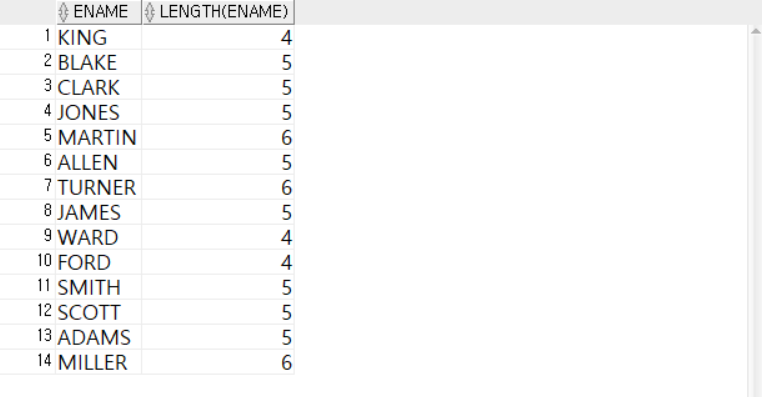
Q005
-EMP 테이블에서 ENAME의 문자열 길이가 5이상인 데이터를 조회하시오.

Q006
- LENGTH('한글'), LENGTHB('한글')
- 문자열길이반환, 문자열 바이트 수 반환환

Q007
- 문자열 일부분을 추출
- SUBSTR( 문자열 , 시작위치, 추출길이)
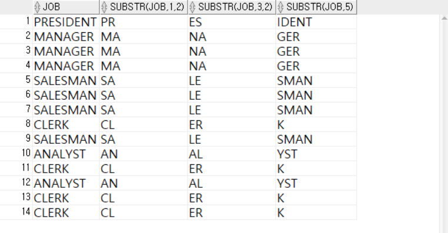
Q008
- -의 의미는?
- C(-5)L(-4)E(-3)R(-2)K(-1)

Q009
- 특정문자위치 찾기
- INSTR(문자열, 찾을거, 시작위치, 몇번째째)
- 'HELLO, ORACLE!' 문자열에서 다음과 같이 찾으시오.

Q010
- EMP테이블에서 INSTR 함수로 사원이름에 S가 있는 데이터를 조회하시오
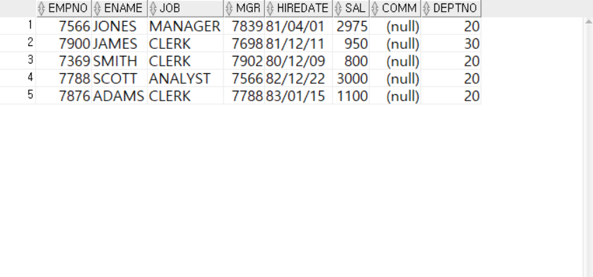
Q011
- EMP테이블에서 LIKE를 이용하여 사원이름에 S가 있는 데이터를 조회하시오

Q012
- REPLACE를 이용하여 연락처의 -을 공백으로, -을 뺀데이터로 조회하시오오
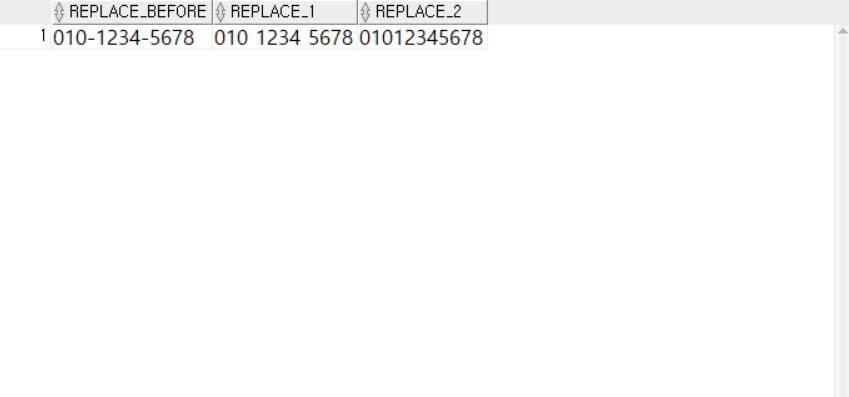
Q013
- LPAD, RPAD를 이용하여 다음과 같이 데이터를 출력하시오오
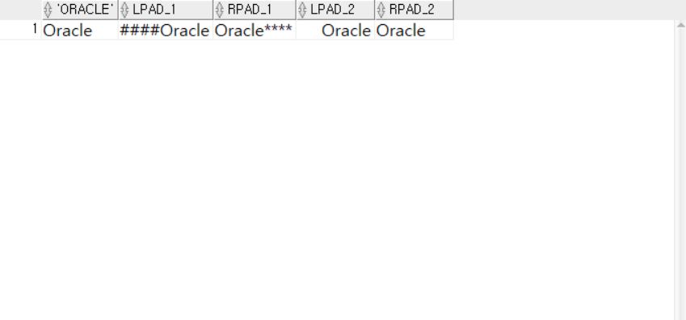
Q014
- RPAD를 이용하여 개인정보뒷자리 *로 출력하시오.

Q015
- EMP 테이블에서 EMPNO와 ENAME 사이에 :을 넣고 문자열을 연결하시오.

Q016
- TRIM을 이용하여 다음과 같이 공백을 제거하고 출력하시오.
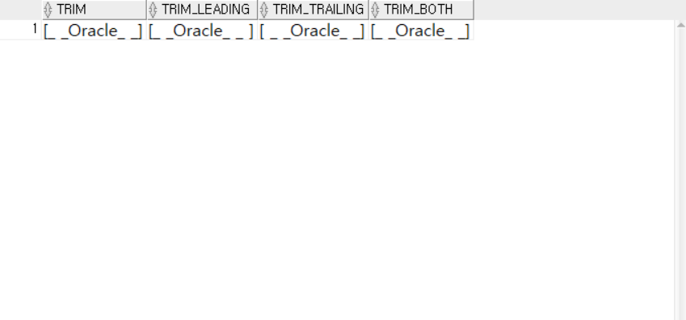
Q017
- TRIM을 이용하여 삭제할 문자 삭제후 출력가능능

Q018
- TRIM, LTRIM, RTRIM 사용하여 문자열 출력하기기

Q019
- ROUND를 이용하여 반올림 된 숫자 출력하기
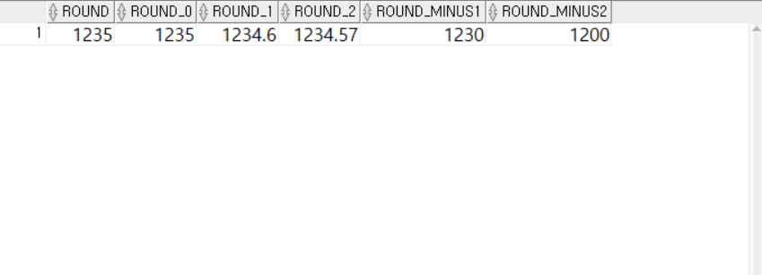
Q020
- 특정위치에서 버리는 TRUNC 함수수

Q021
- CEIL : 가장 가까운 큰 정수,
- FLOOR : 가장 가까운 작은 정수 반환
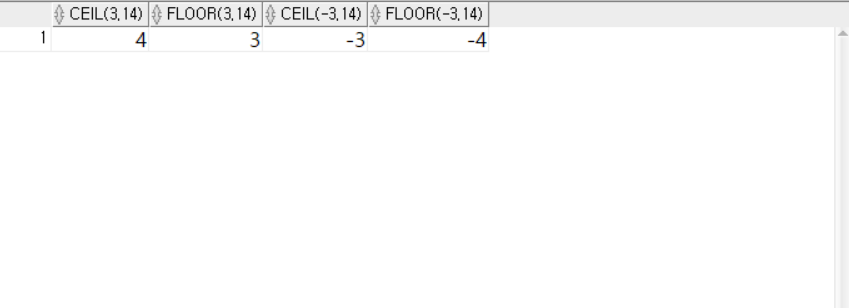
Q022
- MOD : 특정 숫자를 나누고 그 나머지 출력
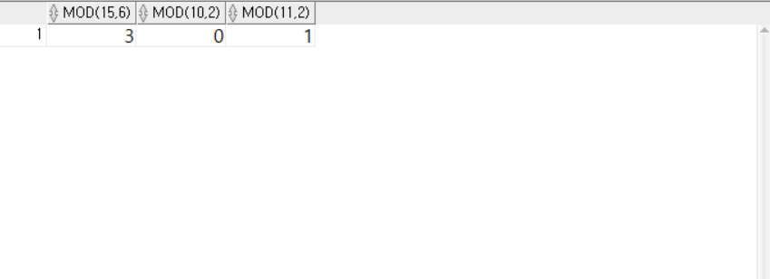
Q023
- SYSDATE 함수를 사용하여 날짜 출력
- 하루이전, 이후후

Q024
- ADD_MONTHS 3개월 후 날짜

Q025
- EMP 테이블에서 입사 10주년이 되는 사원들의 데이터를 출력하시오.

Q026
- EMP 테이블에서 입사 42년 미만인 사원데이터를 출력하시오.
- 12*42 = 504
- 42년이 지나 안나올 수 도 있음. 안나오면 개월수 늘려서 테스트해볼것

Q027
- EMP 테이블에서 HIREDATE와 SYSDATE사이의 개월수를 출력하시오.
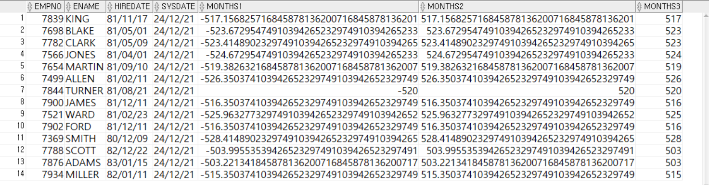
Q028
- 돌아오는 요일에 해당하는 날짜와 달의 마지막 날짜를 자도으로 계산산
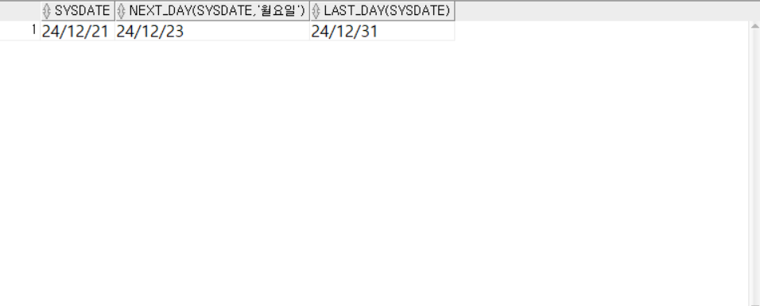
Q029
- ROUND를 사용하여 날짜 데이터를 출력하시오.

Q030
- TRUNC 함수를 사용하여 날짜 데이터를 출력하시오.
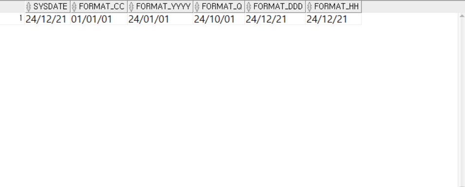
Q031
- 숫자와 문자열을 더하여 출력하시오
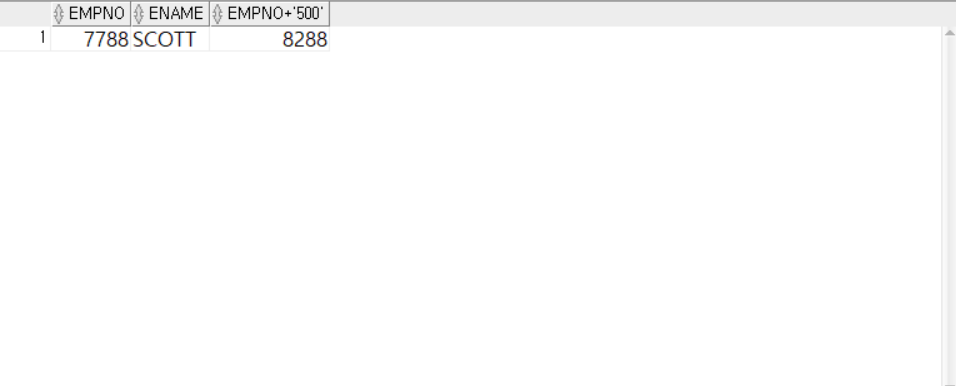
Q032
- 문자열과 숫자를 더하여 출력하시오.
오류가 난다면 그이유를 적으시오.
SELECT 'ABCD' + EMPNO, EMPNO FROM EMP WHERE ENAME = 'SCOTT';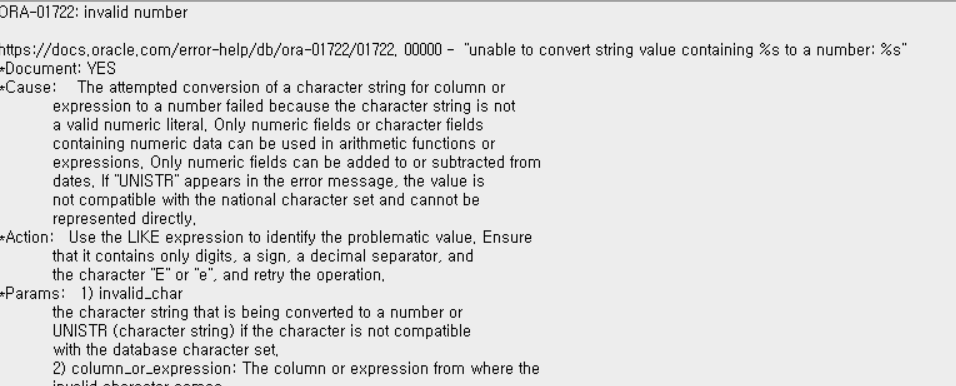
Q033
- SYSDATE 날짜 형식지정하여 출력하시오.
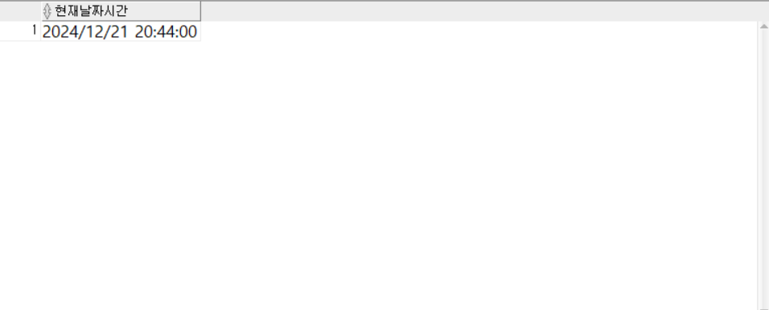
Q034
- 월과 요일을 다양한 형식으로 출력하시오.

Q035
- 여러 언어로 날짜(월) 출력하시오

Q036
- 여러 언어로 날짜(요일일) 출력하시오
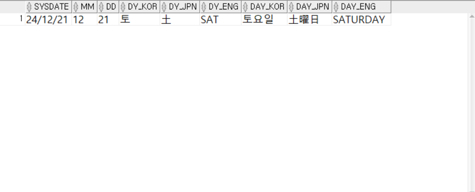
Q037
- SYSDATE 시간형식 지정하여 출력하시오.

Q038
- 여러가지 숫자형식을 사용하여 급여를 출력하시오.
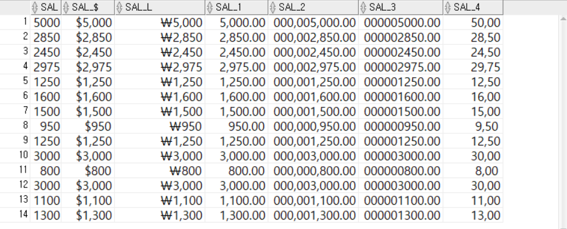
Q039
- 문자데이터와 숫자데이터를 연산하여 출력하시오.
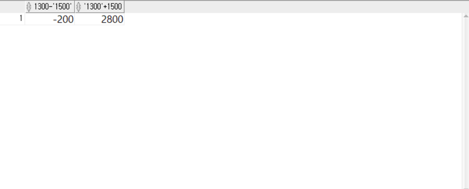
Q040
- 문자데이터끼지 연산하여 출력하시오
- 오류가 난다면 그이유를 적으시오.
SELECT '1,300' - '1,500' FROM DUAL;

Q041
- TO_NUMBER 함수로 연산하여 출력하시오.

Q042
- TO_DATE를 이용하여 문자 데이터를 날짜 데이터로 변환하시오.

Q043
- EMP 테이블에서 1981년 6월 1일 이후에 입사한 사원정보를 출력하시오.

Q044
- 여러가지 형식으로 날짜 데이터를 출력하시오.
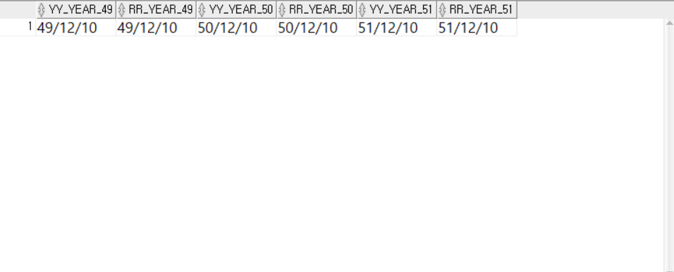
Q045
- EMP테이블에서 NVL 함수를 사용하여 다음과 같이 출력하시오.

Q046
- EMP테이블에서 NVL2 함수를 사용하여 다음과 같이 출력하시오.
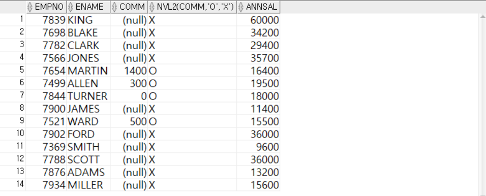
Q047
- EMP테이블에서 DECODE 함수를 사용하여 다음과 같이 출력하시오.
- JOB이 MANAGER 는 급여의 10% 인상한 급여
SALESMAN 는 급여의 5% 인상한 급여
ANALYST 는 그대로
나머지는 3% 인상된 급여

Q048
- EMP테이블에서 CASE 함수를 사용하여 다음과 같이 출력하시오.
- JOB이 MANAGER 는 급여의 10% 인상한 급여
SALESMAN 는 급여의 5% 인상한 급여
ANALYST 는 그대로
나머지는 3% 인상된 급여
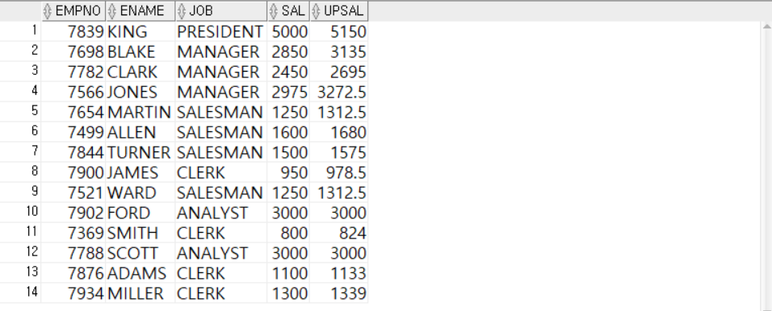
Q049
- 기준데이터 없이 조건식으로만 CASE 사용가능
- COMM 값이 NULL 이면 해당사항 없음
0 이면 수당없음
0 초과시 초과한 수당을 출력력
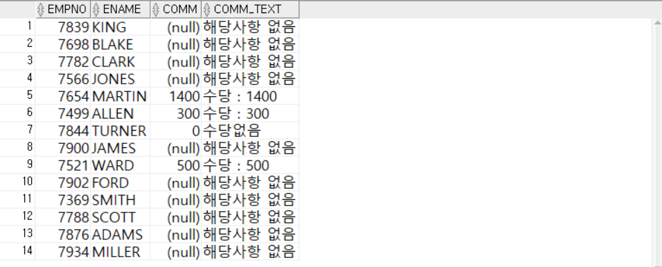
사고확장
EX001
- EMP 테이블에서 다음과 같은 결과가 나오도록 SQL문을 작성하시오.
- EMP 테이블에서 ENAME이 다섯글자 이상이며 여섯글자 미만인 사원을 조회하시오.
- MASKING_EMPNO 는 EMPNO 앞두자리외 뒷자리를 *로 출력
- MASKING_ENAME 는 사원이름의 첫글자만 보여주고 나머지는 *로 출력
※ 앞자리 추출 - SUBSTR(문자열, 어디에서, 몇개)
※ RPAD - RPAD( 문자열, 몇자리, 채울값)
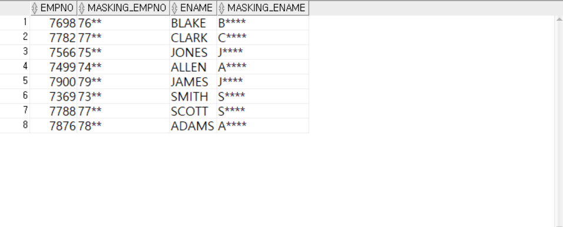
EX002
- EMP 테이블에서 다음과 같은 결과가 나오도록 SQL문을 작성하시오.
- EMP 테이블에서 사원들의 월 평균 근무일 수는 21.5일
2 하루 근무시간을 8시간으로 보았을때 사원들의 하루급여(DAY_PAY) 와 시급(TIME_PAY)을 계산하여 결과를 조회하시오.
※ 하루급여는 소수점 세번째 자리에서 버리고(TRUNC), 시급은 두번째 소수점에서 반올림(ROUND)하시오

EX003
- EMP 테이블에서 다음과 같은 결과가 나오도록 SQL문을 작성하시오.
- EMP테이블에서 사원들은 입사일(HIREDATE)을 기준으로 3개월이 지난 후 첫 월요일에 정직원이 됨
- 사원들이 정직원이 되는 날짜(R_JOB)를 YYYY-MM-DD 형식으로 오른쪽과 같이 출력하시오.
- 추가 수당(COMM)이 없는 사원들의 추가수당은 N/A로 출력하시오.
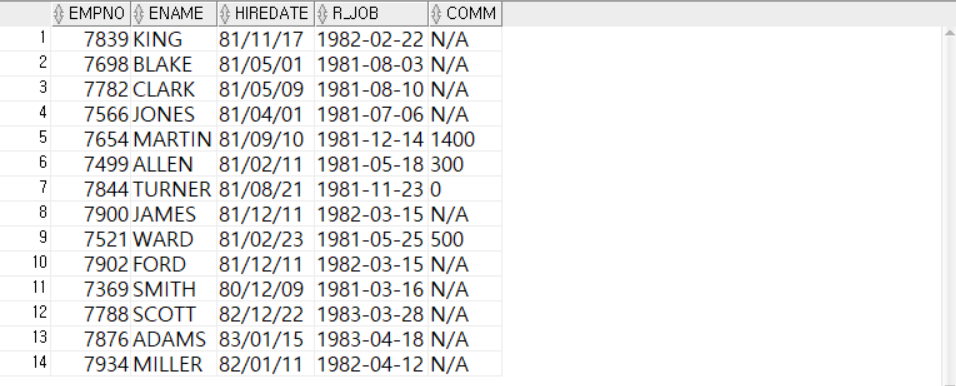
EX004
- EMP 테이블에서 다음과 같은 결과가 나오도록 SQL문을 작성하시오.
- 직속상관의 사원번호(MGR)를 다음과 같은 조건을 기준으로 변환해서 CHG_MGR열에 출력하시오
- 직속상관의 사원번호가 존재하지 않을경우 : 00000
- 직속상관의 사원번호 앞 두자리가 75일 경우 : 5555
- 직속상관의 사원번호 앞 두자리가 76일 경우 : 6666
- 직속상관의 사원번호 앞 두자리가 77일 경우 : 7777
- 직속상관의 사원번호 앞 두자리가 78일 경우 : 8888
- 그 외 직속상관 사원번호의 경우 : 본래 직속상관의 사원번호 그대로 출력

- SUBSTR(JOB, 1, 2) 는 어떤 결과를 반환하나요?
- INSTR(ENAME, 'S') > 0 은 어떤 조건을 의미하나요?
- ROUND(SAL / 21.5 / 8, 1) 은 어떤 계산을 수행하나요?
- TO_CHAR(SYSDATE, 'DAY') 는 어떤 정보를 보여주나요?
- NVL(COMM, 0) 은 어떤 상황에서 유용한가요?
🧪 Step 5: 기억 테스트
- UPPER 와 INITCAP 의 차이는 무엇인가요?
- REPLACE 와 TRIM 은 각각 어떤 작업을 하나요?
- ROUND 와 TRUNC 은 어떤 차이가 있나요?
- TO_DATE('2018-07-14', 'YYYY-MM-DD') 는 어떤 형식으로 변환하나요?
- DECODE 와 CASE 는 어떤 상황에서 사용되나요?
👋 열심히 들어주셔서 감사합니다!
오늘의 한 걸음이 내일의 가능성이 되길 바라며,